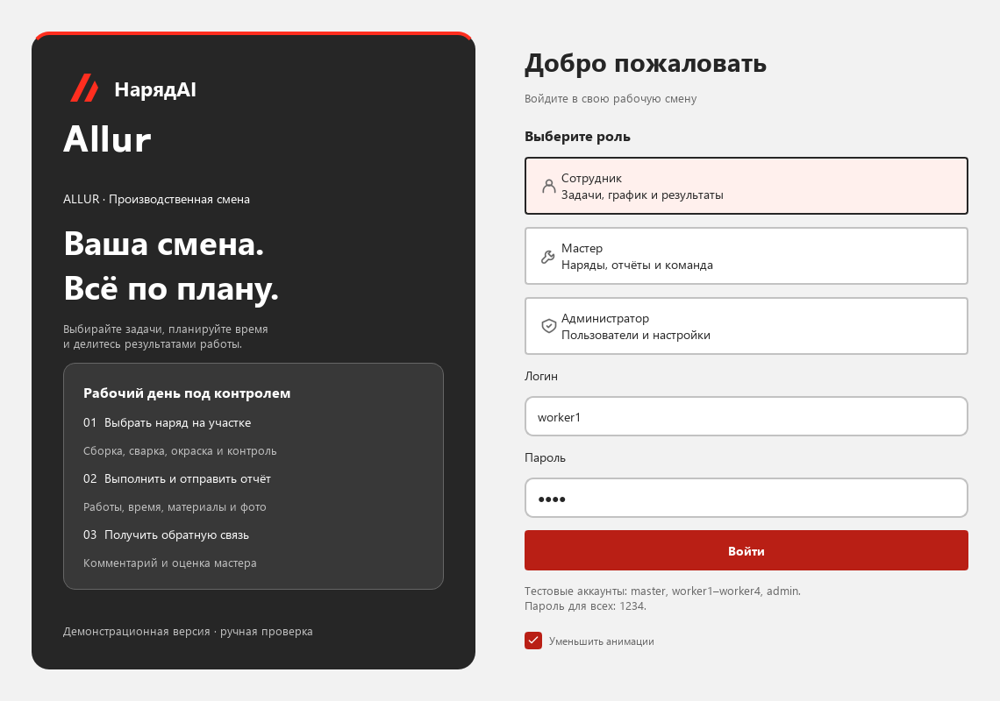
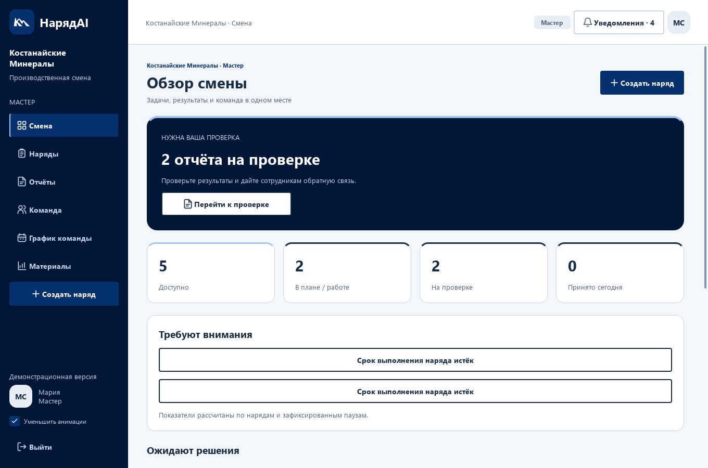
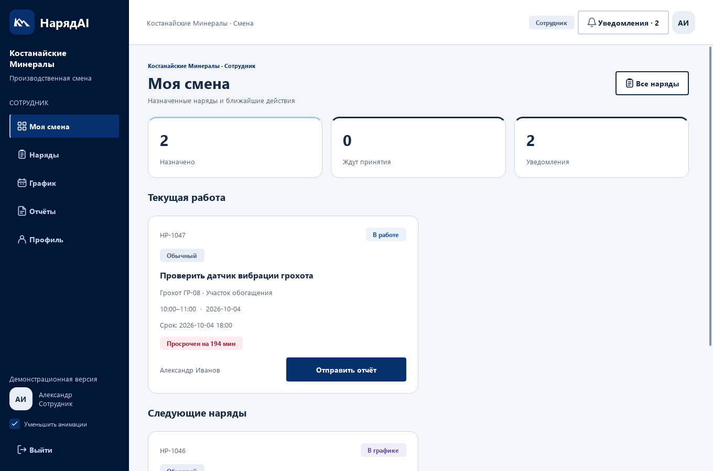
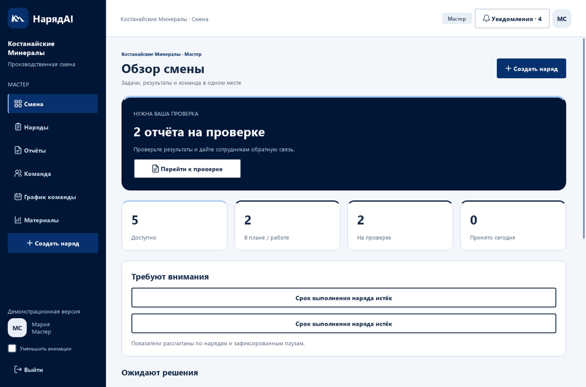

#001636Навигация, экран входа; наблюдается на сайте
Кейс №1 · QOSTANAI AI INDUSTRY HACKATHON 2026
НарядAI для АО «Костанайские Минералы»
Адаптация по официальному сайту km.kz. Дополнительные цвета и варианты знака — рабочие решения для прототипа; утверждённый брендбук не получен.
#001636Навигация, экран входа; наблюдается на сайте
#07316EКнопки, ссылки; наблюдается на сайте
#E8EEF6Выбранные элементы; наблюдается на сайте
#FFFFFFКарточки и текст на тёмном фоне
#F3F6FAОсновной фон; расширение UI
#172B45Основные подписи; расширение UI
Красный — авария или ошибка; зелёный — успех; жёлтый — занятость; синий — очередь. Каждое состояние подписано.
Происхождение и правила оформления · Соответствие кейсу и границы MVP



